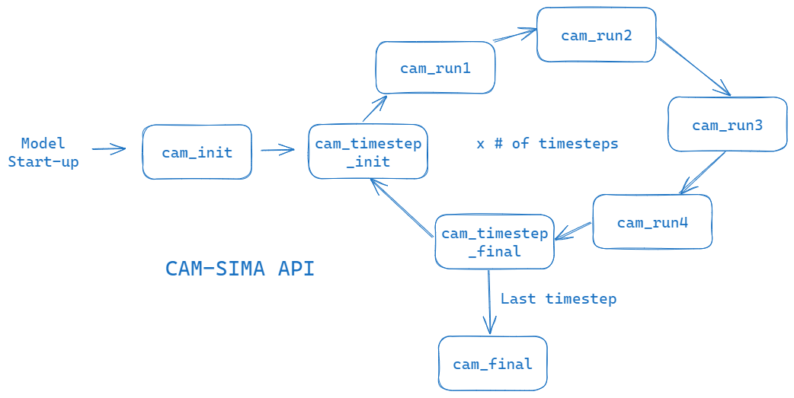
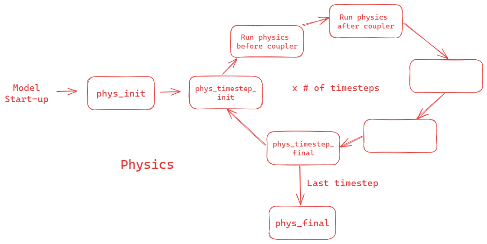
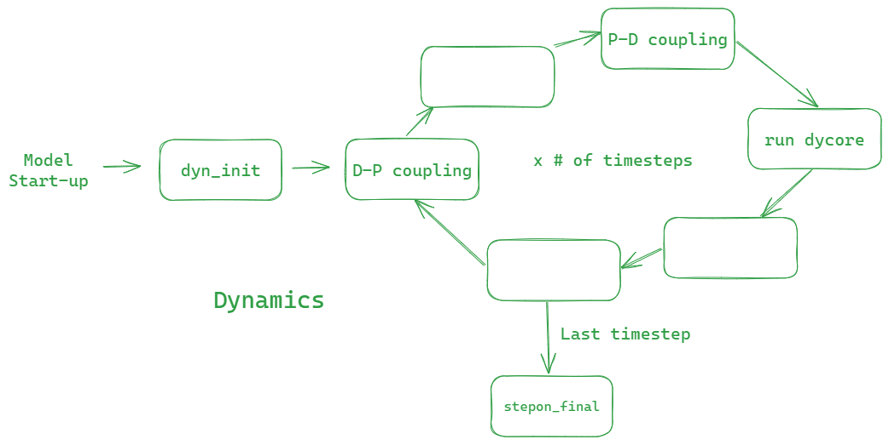
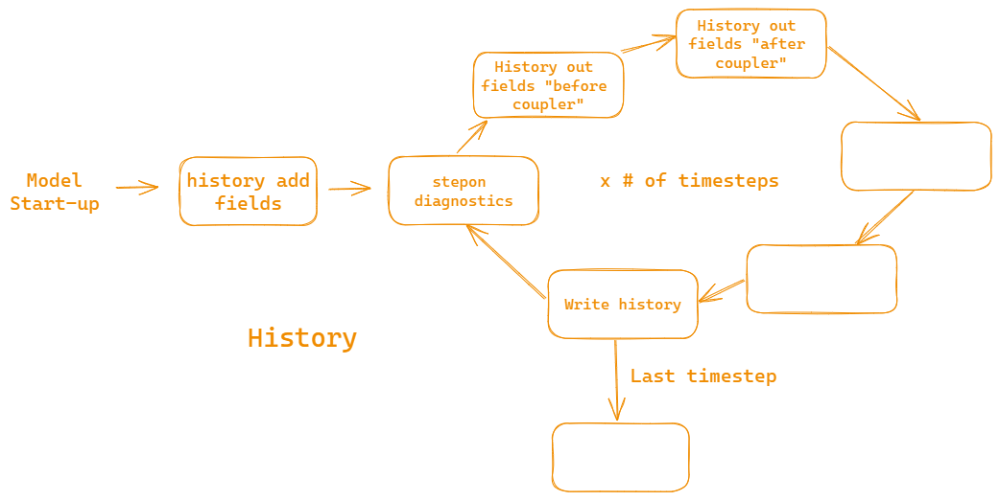

Run process
*Static images can be found at the bottom of this page
CAM-SIMA API
Upon running ./case.submit the core CAM-SIMA driver code* is in $CAM-SIMA/src/control/cam_comp.F90. This section lays out each of the subroutines within cam_comp.F90.
The subroutines in cam_comp.F90 are set up to mirror the phases of the Common Community Physics Package (CCPP).
* cam_comp.F90 subroutines are called by the NUOPC cap: $CAM-SIMA/src/cpl/nuopc/atm_comp_nuopc.F90
cam_init
cam_init sets up the metadata and configuration objects/modules for the run. It is called once at startup. Below are the variables passed in:
| Variable (intent) | Definition | How it's Used |
|---|---|---|
| caseid (in) | case name (as input to ./create_newcase) | metadata for cam_control_mod and cam_history |
| ctitle (in) | case title (matches caseid) | metadata for cam_control_mod and cam_history |
| model_doi_url (in) | CESM model DOI (currently hard-coded to "non_set") | metadata for cam_history |
| initial_run_in (in) | logical that is TRUE if this is a startup run** | determines whether to call dyn_init or read restart |
| restart_run_in (in) | logical that is TRUE if this is a restart run** | metadata for cam_control_mod |
| branch_run_in (in) | logical that is TRUE if this is a branch run** | metadata for cam_control_mod |
| post_assim_in (in) | logical that is TRUE if data assimilation mode (DART) is on | metadata for cam_control_mod |
| calendar (in) | calendar type (NOLEAP or GREGORIAN) | input to time manager init |
| brnch_retain_casename (in) | flag to allow a branch to use the same caseid as the run being branched from | metadata for cam_control_mod |
| aqua_planet (in) | flag to run model in aqua planet mode | metadata for cam_control_mod |
| single_column (in) | flag to run the single column model (SCAM) | passed into scam_readnl (not yet enabled in CAM-SIMA |
| scmlat (in) | SCAM latitude | passed into scam_readnl (not yet enabled in CAM-SIMA) |
| scmlon (in) | SCAM longitude | passed into scam_readnl (not yet enabled in CAM-SIMA) |
| eccen (in) | Earth's eccentricity factor | used to set module-level eccen in cam_control_mod |
| obliqr (in) | Earth's obliquity in radians | used to set module-level obliqr in cam_control_mod |
| lambm0 (in) | Mean longitude of perihelion at the vernal equinox (radians) | used to set module-level lambm0 in cam_control_mod |
| mvelpp (in) | Earth's moving vernal equinox longitude of perihelion plus pi (radians) | used to set module-level mvelpp in cam_control_mod |
| perpetual_run (in) | flag to determine if perpetual mode is enabled | passed to time manager init |
| perpetual_ymd (in) | perpetual year, month, day (YYYYMMDD) used to determine the sun position and interpolate boundary data sets | passed to time manager init |
| dtime (in) | model timestep size in seconds | passed to time manager init |
| start_ymd (in) | start date (YYYYMMDD) | passed to time manager init |
| start_tod (in) | start time of day (sec) | passed to time manager init |
| ref_ymd (in) | reference date (YYYYMMDD) (defaults to start_ymd) | passed to time manager init |
| ref_tod (in) | reference time of day (sec) (defaults to start_tod) | passed to time manager init |
| stop_ymd (in) | stop date (YYYYMMDD) | passed to time manager init |
| stop_tod (in) | stop time of day (sec) | passed to time manager init |
| curr_ymd (in) | current date (YYYYMMDD) (same as start date) | passed to time manager init |
| curr_tod (in) | current time of day (sec) (same as start tod) | passed to time manager init |
| cam_in (inout) | surface exchange object - coupler to CAM-SIMA | allocated if this is an initial run |
| cam_out (inout) | surface exchange object - CAM-SIMA to coupler | allocated if this is an initial run |
** For additional information on run types, see the CESM Tutorial
cam_init calls the following key subroutines (locations) in this order:
cam_ctrl_init(src/control/cam_control_mod.F90): Sets the module-level run configuration variables; logs configurations to the atm logcam_ctrl_set_orbit(src/control/cam_control_mod.F90): Sets the module-level orbital variablestimemgr_init (src/utils/time_manager.F90`): Initializes the time manager; logs configurations to the atm logread_namelist(src/control/runtime_opts.F90): Reads all namelists for the run, including auto-generated scheme namelists (see build process)cam_ctrl_set_physics_type(src/control/cam_control_mod.F90): sets module-level configuration for variables for simple physics and moist physics schemes; logs configurations to atm logcam_initfiles_open(src/control/cam_initfiles.F90): Opens initial or restart file, and topography file if specifiedcam_register_constituents(src/control/cam_comp.F90): Sets the total number and advected number of constituents; currently ALWAYS adds water vapor as constituent (expected by the SE dycore)air_composition_init(src/data/air_composition.F90): Initializes air-composition-dependent model constantsmodel_grid_init(src/dynamics/<dycore>/dyn_grid.F90): Initializes model grids and decompositionscam_ccpp_initialize_constituents($CASE/bld/atm/obj/ccpp/cam_ccpp_cap.F90): initializes the constituent data array; after this point, we cannot add new constituentsdyn_init(src/dynamics/<dycore>/dyn_comp.F90): Initializes the dynamical coreatm2hub_allocandhub2atm_alloc(src/control/camsrfexch.F90): Allocates and sets up surface exchange dataphys_init(src/physics/utils/phys_comp.F90): Initializes physics (includes call to CCPP cap to run init phases of schemes in the Suite Definition File (SDF)stepon_init(src/dynamics/<dycore>/stepon.F90): Initializes dynamics <--> physics coupling
cam_timestep_init
cam_timestep_init is called at the start of each timestep. It has no input/output/inout variables.
The routine calls the following subroutines (locations) in this order:
stepon_timestep_init(src/dynamics/<dycore>/stepon.F90): First phase of dynamics (couple from dynamics to physics); also returns timestep for physicsphys_timestep_init(src/physics/utils/phys_comp.F90):- Read un-initialized data from initial data file
- For the null dycore, this means we're reading most physics input variables (as defined in
src/data/registry.xml) from the ncdata file - For the SE dycore, we are reading in any variables not marked as initialized by the SE dycore initialization
- For the null dycore, this means we're reading most physics input variables (as defined in
- Calls the CCPP cap to run timestep_init phases of all schemes in the user-specified SDF
- Read un-initialized data from initial data file
cam_run1
cam_run1 is the first "run" phase called in the physics loop. It is called every timestep BEFORE the mediator/surface coupler and calls the following subroutine (location):
phys_run1(src/physics/utils/phys_comp.F90): Calls the run phase for all physics schemes in the "physics_before_coupler" group in the SDF
cam_run2
cam_run2 is the second "run" phase called in the physics loop. It is called every timestep AFTER the mediator/coupler. Input/output variables:
| Variable (intent) | Definition | How it's Used |
|---|---|---|
| cam_in (inout) | surface exchange object - input to CAM-SIMA | Passed into stepon_run2 |
| cam_out (inout) | surface exchange object - output from CAM-SIMA | Passed into stepon_run2 |
cam_run2 calls these subroutines (locations):
phys_run2(src/physics/utils/phys_comp.F90): Calls the run phase for all physics schemes in the "physics_after_coupler" group in the SDFstepon_run2(src/dynamics/<dycore>/stepon.F90): The second phase of dynamics (couple from physics to dynamics)
cam_run3
cam_run3 is the third "run" phase called in the physics loop. It is called every timestep AFTER cam_run3 and BEFORE cam_run4 (unsurprisingly). In/out variables:
| Variable (intent) | Definition | How it's Used |
|---|---|---|
| cam_out (inout) | surface exchange object - output from CAM-SIMA | Passed into stepon_run3 |
cam_run3 calls the following subroutine (location):
stepon_run3(src/dynamics/<dycore>/stepon.F90): Callsdyn_run, which runs the dycore
cam_run4
cam_run4 currently does nothing! (but it is called every timestep)
cam_timestep_final
cam_timestep_final runs at the end of each timestep. In/out variables:
| Variable (intent) | Definition | How it's Used |
|---|---|---|
| rstwr (in) | flag to write a restart file | Passed into history_wrap_up |
| nlend (in) | flag to indicate whether this is the final timestep | Passed into history_wrap_up |
cam_timestep_final calls the following subroutines (locations):
- History routines. If it's not the last (half) timestep,
history_write_files(src/history/cam_history.F90): Writes fields to user-configured history files (if applicable)history_wrap_up(src/history/cam_history.F90): Closes files and zeros buffers as necessary
phys_timestep_final(src/physics/utils/phys_comp.F90):- Calls the timestep_final phase for all physics schemes in the SDF
- If
ncdata_checkis set inuser_nl_cam, callsphysics_check_data($CASE/bld/atm/obj/phys_init/physics_inputs.F90) to perform snapshot checking
cam_final
cam_final is called once at the end of the model execution. In/out variables:
| Variable (intent) | Definition | How it's Used |
|---|---|---|
| cam_in (inout) | surface exchange object - input to CAM-SIMA | Deallocated |
| cam_out (inout) | surface exchange object - output from CAM-SIMA | Deallocated |
cam_final calls the following subroutines (locations):
phys_final(src/physics/utils/phys_comp.F90): calls "final" phase of all schemes in the SDFstepon_final(src/dynamics/<dycore>/stepon.F90): finalizes dycore (doesn't currently do anything)atm2hub_deallocateandhub2atm_deallocate(src/control/camsrfexch.F90): deallocate cam_in/cam_out objects
Static run sequence images
   